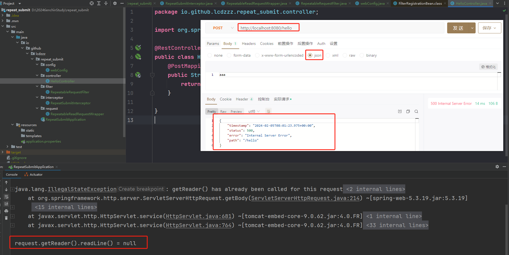
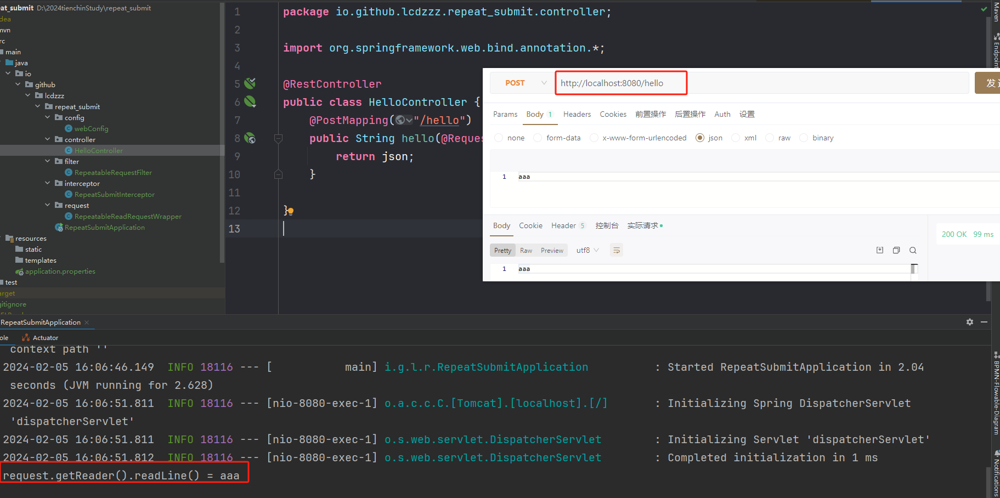
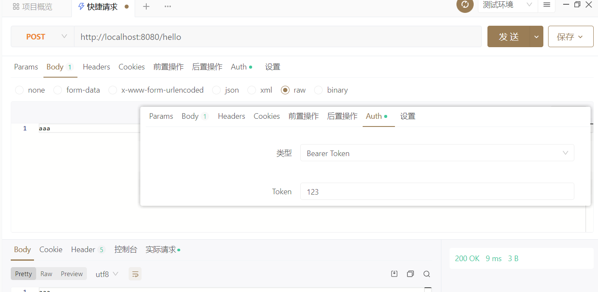
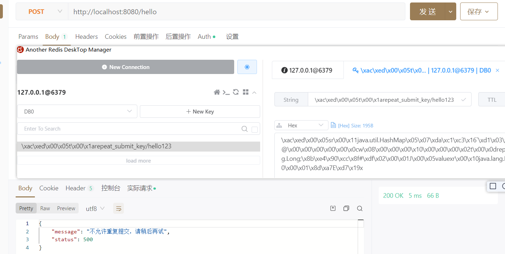

处理幂等性
ruoyi脚手架是通过参数去判断：
- 把请求缓存起来到redis里面去【请求地址、请求参数…】
- 比如：请求地址和请求参数都是一样的话，10秒只能就拒绝重复提交
但这个方法存在一个问题：如果请求的参数是json，一旦我提取出来，将来在接口里面就提取不到了，所以我们先要把这个问题解决掉
所需依赖：springweb、redis、aop
<dependencies>
<dependency>
<groupId>org.springframework.boot</groupId>
<artifactId>spring-boot-starter-data-redis</artifactId>
</dependency>
<dependency>
<groupId>org.springframework.boot</groupId>
<artifactId>spring-boot-starter-web</artifactId>
</dependency>
<dependency>
<groupId>org.springframework.boot</groupId>
<artifactId>spring-boot-starter-aop</artifactId>
</dependency>
<dependency>
<groupId>org.springframework.boot</groupId>
<artifactId>spring-boot-starter-test</artifactId>
<scope>test</scope>
</dependency>
</dependencies>请求参数格式问题
io流（json）可能产生的问题复现
io/github/lcdzzz/repeat_submit/interceptor/RepeatSubmitInterceptor.java
import org.springframework.stereotype.Component;
import org.springframework.web.servlet.HandlerInterceptor;
import org.springframework.web.servlet.ModelAndView;
import javax.servlet.http.HttpServletRequest;
import javax.servlet.http.HttpServletResponse;
@Component
public class RepeatSubmitInterceptor implements HandlerInterceptor {
@Override
public boolean preHandle(HttpServletRequest request, HttpServletResponse response, Object handler) throws Exception {
System.out.println("request.getReader().readLine() = " + request.getReader().readLine());
return true;
}
@Override
public void postHandle(HttpServletRequest request, HttpServletResponse response, Object handler, ModelAndView modelAndView) throws Exception {
HandlerInterceptor.super.postHandle(request, response, handler, modelAndView);
}
@Override
public void afterCompletion(HttpServletRequest request, HttpServletResponse response, Object handler, Exception ex) throws Exception {
HandlerInterceptor.super.afterCompletion(request, response, handler, ex);
}
}io/github/lcdzzz/repeat_submit/config/webConfig.java
import io.github.lcdzzz.repeat_submit.interceptor.RepeatSubmitInterceptor;
import org.springframework.beans.factory.annotation.Autowired;
import org.springframework.context.annotation.Configuration;
import org.springframework.web.servlet.config.annotation.InterceptorRegistry;
import org.springframework.web.servlet.config.annotation.WebMvcConfigurer;
@Configuration
public class webConfig implements WebMvcConfigurer {
@Autowired
RepeatSubmitInterceptor repeatSubmitInterceptor;
@Override
public void addInterceptors(InterceptorRegistry registry) {
registry.addInterceptor(repeatSubmitInterceptor).addPathPatterns("/**");
}
}io/github/lcdzzz/repeat_submit/controller/HelloController.java
import org.springframework.web.bind.annotation.GetMapping;
import org.springframework.web.bind.annotation.RequestBody;
import org.springframework.web.bind.annotation.RestController;
@RestController
public class HelloController {
@PostMapping("/hello")
public String hello(@RequestBody String json){//@RequestBody底层也是通过io流实现的
return json;
}
}【注】访问/hello时首先会被拦截器拦截，拦截器里面的request.getReader().readLine()与接口中的@RequestBody都是通过io流实现的，然而io流使用过一次以后数据就不存在了。所以会出现报错。
结果：

问题解决
解决思路：用装饰者模式将HttpServletRequest重新处理一下
RepeatableReadRequestWrapper 类
这个类是一个继承自 HttpServletRequestWrapper 的包装类。主要作用是：
- 在构造函数中，读取请求的输入流，并将其保存在
bytes数组中。 - 重写
getReader()和getInputStream()方法，返回一个新的BufferedReader和ServletInputStream实例，这两者都是用bytes数组来构造的。
实际上，这个类的目的是允许请求的输入流（请求体）能够被多次读取，因为默认情况下，Servlet的输入流只能读取一次。
io/github/lcdzzz/repeat_submit/request/RepeatableReadRequestWrapper.java
import javax.servlet.ReadListener;
import javax.servlet.ServletInputStream;
import javax.servlet.http.HttpServletRequest;
import javax.servlet.http.HttpServletRequestWrapper;
import javax.servlet.http.HttpServletResponse;
import java.io.*;
public class RepeatableReadRequestWrapper extends HttpServletRequestWrapper {
private final byte[] bytes;//把从io流拿出来的
public RepeatableReadRequestWrapper(HttpServletRequest request, HttpServletResponse response) throws IOException {
super(request);
request.setCharacterEncoding("UTF-8");
response.setCharacterEncoding("UTF-8");
bytes=request.getReader().readLine().getBytes();
}
@Override
public BufferedReader getReader() throws IOException {
return new BufferedReader((new InputStreamReader(getInputStream())));
}
@Override
public ServletInputStream getInputStream() throws IOException {
ByteArrayInputStream bais = new ByteArrayInputStream(bytes);
return new ServletInputStream() {
@Override
public boolean isFinished() {
return false;
}
@Override
public boolean isReady() {
return false;
}
@Override
public void setReadListener(ReadListener readListener) {
}
@Override
public int read() throws IOException {
return bais.read();
}
@Override
public int available() throws IOException {//整个数据的长度
return bytes.length;
}
};
}
}
RepeatableRequestFilter 类
这个类是一个实现了 Filter 接口的过滤器。主要作用是：
- 检查请求的
Content-Type是否以 “application/json” 开头，如果是，就创建一个RepeatableReadRequestWrapper对象，并替换原始的HttpServletRequest，以允许请求体的多次读取。 - 继续执行过滤器链，将请求和响应传递给下一个过滤器或目标 Servlet。
这个过滤器的作用是在请求为 JSON 格式时，将原始的请求对象替换为具有多次读取能力的包装类，从而防止在处理请求时由于读取请求体而导致的问题。
io/github/lcdzzz/repeat_submit/filter/RepeatableRequestFilter.java
import io.github.lcdzzz.repeat_submit.request.RepeatableReadRequestWrapper;
import org.springframework.util.StringUtils;
import javax.servlet.*;
import javax.servlet.http.HttpServletRequest;
import javax.servlet.http.HttpServletResponse;
import java.io.IOException;
public class RepeatableRequestFilter implements Filter {
@Override
public void doFilter(ServletRequest servletRequest, ServletResponse servletResponse, FilterChain filterChain) throws IOException, ServletException {
HttpServletRequest request = (HttpServletRequest) servletRequest;
//这通常用于在处理 HTTP 请求时，判断请求的数据格式是否为 JSON 格式
if (StringUtils.startsWithIgnoreCase(request.getContentType(),"application/json")){//StringUtils.startsWithIgnoreCase()以某个前缀开始的
RepeatableReadRequestWrapper requestWrapper = new RepeatableReadRequestWrapper(request, (HttpServletResponse) servletResponse);
filterChain.doFilter(requestWrapper,servletResponse);//也就是说如果请求时json格式的，那就来个偷梁换柱，换成装饰者模式处理之后的请求。使她可以重复读
return;
}
filterChain.doFilter(servletRequest,servletResponse);
}
}webConfig 类
这个类是一个Spring Boot的配置类，实现了 WebMvcConfigurer 接口。主要作用是：
- 注册一个自定义的拦截器
RepeatSubmitInterceptor，该拦截器用于防止表单重复提交。 - 注册一个自定义的过滤器
RepeatableRequestFilter，该过滤器用于处理重复请求。这里通过FilterRegistrationBean配置了过滤器的注册。
io/github/lcdzzz/repeat_submit/config/webConfig.java
import io.github.lcdzzz.repeat_submit.filter.RepeatableRequestFilter;
import io.github.lcdzzz.repeat_submit.interceptor.RepeatSubmitInterceptor;
import org.springframework.beans.factory.annotation.Autowired;
import org.springframework.boot.web.servlet.FilterRegistrationBean;
import org.springframework.context.annotation.Bean;
import org.springframework.context.annotation.Configuration;
import org.springframework.web.servlet.config.annotation.InterceptorRegistry;
import org.springframework.web.servlet.config.annotation.WebMvcConfigurer;
@Configuration//声明这是一个配置类，Spring会在启动时加载并处理它。
public class webConfig implements WebMvcConfigurer {//实现了 WebMvcConfigurer 接口，用于配置Spring MVC。
@Autowired
RepeatSubmitInterceptor repeatSubmitInterceptor;//使用Spring的依赖注入，注入一个 RepeatSubmitInterceptor 的实例。这个拦截器是用于防止表单重复提交的自定义拦截器。
@Override
public void addInterceptors(InterceptorRegistry registry) {
//重写 addInterceptors 方法，向拦截器注册表中添加自定义的拦截器。这里注册了 RepeatSubmitInterceptor，并指定了拦截路径为 "/**"，即拦截所有请求。
registry.addInterceptor(repeatSubmitInterceptor).addPathPatterns("/**");
}
//声明一个Bean，该Bean是 FilterRegistrationBean 类型的，用于注册过滤器。在这里，注册了一个 RepeatableRequestFilter 过滤器，并设置其拦截路径为 "/*"，即拦截所有请求。这个过滤器可能是用于处理重复请求的自定义过滤器。
@Bean
FilterRegistrationBean<RepeatableRequestFilter> repeatableRequestFilterFilterRegistrationBean(){
FilterRegistrationBean<RepeatableRequestFilter> bean = new FilterRegistrationBean<>();
bean.setFilter(new RepeatableRequestFilter());
bean.addUrlPatterns("/*");//拦截所有请求
return bean;
}
}综合来看，这三段代码一起实现了一个防止重复提交的机制，在请求为 JSON 格式时，通过替换请求对象的方式，允许请求体的多次读取。同时，通过拦截器和过滤器的配置，使这个机制能够在整个应用中生效。
结果：

过滤器先执行，拦截器后执行。因为拦截器是servlet调用的，过滤器比servlet先执行。所以顺序应该是在过滤器中先把请求的格式切换过来。
对应ruoyi/tienchin的实现
tienchin-common/src/main/java/com/lcdzzz/common/filter/RepeatedlyRequestWrapper.java===io/github/lcdzzz/repeat_submit/request/RepeatableReadRequestWrapper.java
tienchin-common/src/main/java/com/lcdzzz/common/filter/RepeatableFilter.java===io/github/lcdzzz/repeat_submit/filter/RepeatableRequestFilter.java
tienchin-framework/src/main/java/com/lcdzzz/framework/config/FilterConfig.java===io/github/lcdzzz/repeat_submit/config/webConfig.java
防止重复提交
思路：把【你是谁、请求地址、请求参数…】存到redis里面去。
定义注解
@Target(ElementType.METHOD)
@Retention(RetentionPolicy.RUNTIME)
public @interface RepeatSubmit {
/**
* 两个请求之间的间隔时间
* @return
*/
int interval() default 5000;
/**
* 重复提交时的提示文本
* @return
*/
String message() default "不允许重复提交，请稍后再试";
}redis工具类
@Component
public class RedisCahe {
@Autowired
RedisTemplate redisTemplate;
public <T> void setRedisTemplate(final String key, final T value, Integer timeout, final TimeUnit timeUnit){
/**
* opsForValue() 方法，你可以获取一个用于操作字符串值的操作对象。然后，调用 set() 方法，将指定的键与值关联起来。
*/
redisTemplate.opsForValue().set(key,value,timeout,timeUnit);
}
public <T> T getCacheObject(final String key){
ValueOperations<String,T> valueOperations = redisTemplate.opsForValue();
return valueOperations.get(key);
}
}配置注解
之前配置注解都是用aop的，这次试一试在拦截器地方配置
HandlerMethod： 会把我每定义的一个接口方法封装成一个对象。就是接口方法的各种信息【说属于哪个类的，方法泛型是什么，方法地址，方法参数，返回值…】又被分装成一个新的类，就叫HandlerMethod。
如果所有的像这样的接口方法，最终都会被封装成HandlerMethod。
@PostMapping("/hello")
public String hello(@RequestBody String json){//@RequestBody底层也是通过io流实现的
return json;
}RepeatSubmitInterceptor
代码：
@Component
public class RepeatSubmitInterceptor implements HandlerInterceptor {
public static final String REPEAT_PARAMS = "repeat_params";
public static final String REPEAT_TIME = "repeat_time";
public static final String REPEAT_SUBMIT_KEY = "repeat_submit_key";
public static final String HEADER = "Authorization";
@Autowired
RedisCahe redisCahe;
@Override
public boolean preHandle(HttpServletRequest request, HttpServletResponse response, Object handler) throws Exception {
if (handler instanceof HandlerMethod) {
HandlerMethod handlerMethod = (HandlerMethod) handler;
Method method = handlerMethod.getMethod();
RepeatSubmit repeatSubmit = method.getAnnotation(RepeatSubmit.class);
if (repeatSubmit != null) {//说明method上有这个注解，所以要请求校验判断是否重复
if (isRepeatSubmit(request, repeatSubmit)) {//判断是否是重复提交
Map<String, Object> map = new HashMap<>();
map.put("status", 500);
map.put("message", repeatSubmit.message());
response.setContentType("application/json;charset=utf-8");
response.getWriter().write(new ObjectMapper().writeValueAsString(map));
return false;//拦截下来了
}
}
}
return true;
}
private boolean isRepeatSubmit(HttpServletRequest request, RepeatSubmit repeatSubmit) {
String nowParams = "";//请求参数字符串
if (request instanceof RepeatableReadRequestWrapper) {
try {
nowParams = ((RepeatableReadRequestWrapper) request).getReader().readLine();
} catch (IOException e) {
e.printStackTrace();
}
}
//否则说明请求参数是key-value 格式的
if (StringUtils.isEmpty(nowParams)) {
try {
nowParams = new ObjectMapper().writeValueAsString(request.getParameterMap());
} catch (JsonProcessingException e) {
throw new RuntimeException(e);
}
}
Map<String, Object> nowDataMap = new HashMap<>();
nowDataMap.put(REPEAT_PARAMS, nowParams);
nowDataMap.put(REPEAT_TIME, System.currentTimeMillis());
String requestURI = request.getRequestURI();
String header = request.getHeader(HEADER);//用来提取出用户是谁
String cacheKey = REPEAT_SUBMIT_KEY + requestURI + header.replace("Bearer ", "");
Object cacheObject = redisCahe.getCacheObject(cacheKey);
if (cacheObject != null) {
Map<String, Object> map = (Map<String, Object>) cacheObject;
if (compareParams(map, nowDataMap) && compareTime(map, nowDataMap, repeatSubmit.interval())) {
return true;
}
}
redisCahe.setRedisTemplate(cacheKey, nowDataMap, repeatSubmit.interval(), TimeUnit.MILLISECONDS);
return false;
}
/**
* 判断是否重复提交，返回true就代表是重复提交
*
* @param map
* @param nowDataMap
* @param interval
* @return
*/
private boolean compareTime(Map<String, Object> map, Map<String, Object> nowDataMap, int interval) {
Long time1 = (Long) map.get(REPEAT_TIME);//redis里的时间
Long time2 = (Long) nowDataMap.get(REPEAT_TIME);//现在的时间
if ((time2 - time1) < interval) {
return true;
}
return false;
}
//比较参数是否一样
private boolean compareParams(Map<String, Object> map, Map<String, Object> nowDataMap) {
String nowParams = (String) nowDataMap.get(REPEAT_PARAMS);
String dataParams = (String) map.get(REPEAT_PARAMS);
return nowParams.equals(dataParams);
}
@Override
public void postHandle(HttpServletRequest request, HttpServletResponse response, Object handler, ModelAndView modelAndView) throws Exception {
HandlerInterceptor.super.postHandle(request, response, handler, modelAndView);
}
@Override
public void afterCompletion(HttpServletRequest request, HttpServletResponse response, Object handler, Exception ex) throws Exception {
HandlerInterceptor.super.afterCompletion(request, response, handler, ex);
}
}解释：
这段代码是一个拦截器（Interceptor）中的一个方法
具体来说，这个方法用于在处理请求之前检查是否存在重复提交。它接收三个参数：
HttpServletRequest request：表示 HTTP 请求的对象，包含了客户端发送的请求信息。HttpServletResponse response：表示 HTTP 响应的对象，用于向客户端发送响应信息。Object handler：表示处理请求的处理器对象。
该方法首先判断handler是否是HandlerMethod类型的实例，这是因为处理请求的方法通常是通过HandlerMethod来表示的。如果是，则获取对应的方法对象Method。
接着，通过method.getAnnotation(RepeatSubmit.class)获取该方法上是否标注了RepeatSubmit注解。如果存在该注解，说明该方法需要进行重复提交的校验。
然后，调用isRepeatSubmit(request, repeatSubmit)方法来判断当前请求是否是重复提交。如果是重复提交，则返回一个错误响应，其中包括状态码和消息，并设置响应内容类型为 JSON 格式。
最后，如果不需要拦截该请求（即不是重复提交），则返回true，表示允许继续执行后续的请求处理；如果需要拦截该请求（即是重复提交），则返回false，表示不允许继续执行后续的请求处理。
测试
在/hello接口上添加@RepeatSubmit(interval = 10000)，表示两个请求之间的间隔时间是10秒


对标ruoyi
拦截器：com/lcdzzz/framework/interceptor
【问题】若是两个不一样的人来请求一个接口，同样有可能被拦截下来，但这其实是不合理的
但是在ruoyi这个项目里面是没关系的，因为它肯定有Header。
所以在代码运行部分，肯定是没问题的，但是从逻辑层面来讲，还是上面的例子写的更严谨些。